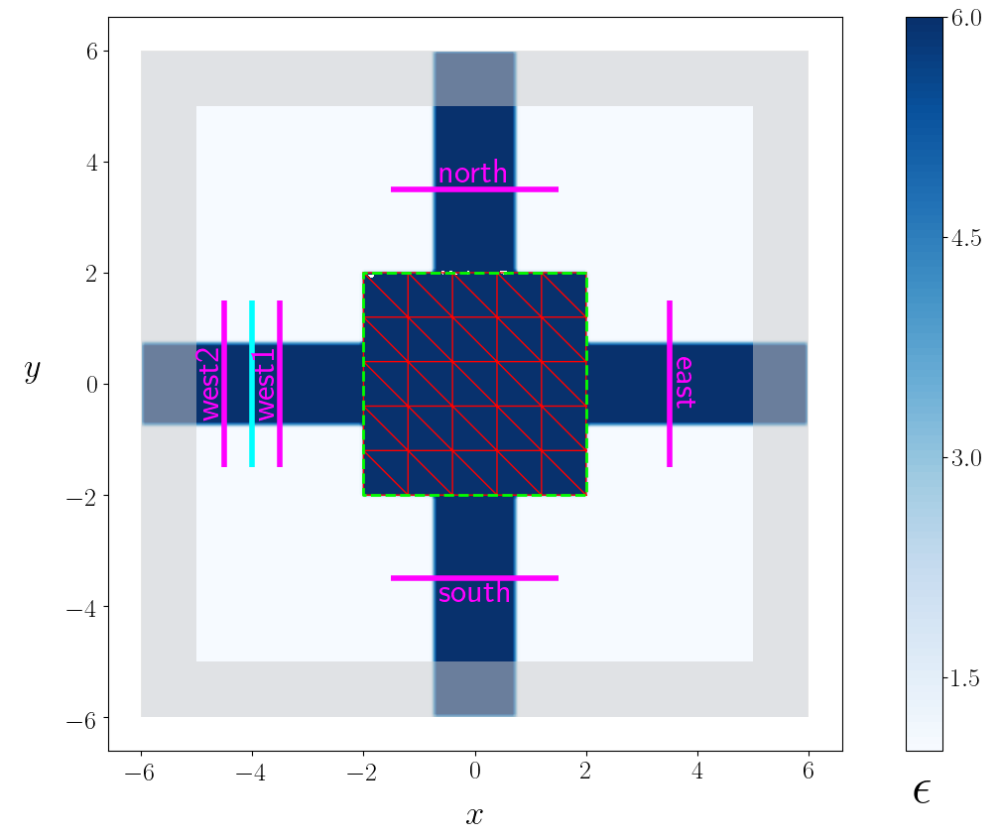

Tutorial walkthrough¶
Having outlined on the previous page some of the
big-picture story—how meep_adjoint fits into the larger
design-optimization ecosystem, and what you can expect to put into and
get out of a typical session—on this page we get down to details.
We will present a step-by-step walkthrough of a meep_adjoint session
that, starting from scratch, automagically finds intricate and highly
non-intuitive device designs whose performance far exceeds anything we
could hope to design by hand.
The problem: optimal routing of optical power flows¶
The engineering problem we will be considering is the design of interconnect router devices for optical networks. For our purposes, a router is a hunk of lossless dielectric material, confined within a rectangular (2D) or box-shaped (3D) region of given fixed dimensions, from which emanate four stub waveguides (of given fixed sizes and materials) representing I/O ports, which we label simply East, West, North, and South.
The router will live inside an optical-network switch with
each port connected to a fiber-optic cable carrying incoming and outgoing
signals, and our job is to design the central hub to ensure that signals
arriving on some given set of input ports are routed to some given set
of output ports with optimality according to some given set of
desiderata. Evidently, different choices of input and output ports
and performance criteria yield different optimization problems, and we will
show how this freedom is reflected in the meep_adjoint API and
our python driver scripts. For most this tutorial, we will focus
on two particular design tasks:
Right-angle router: Steer incoming signals arriving on the West port through a 90-degree bend to depart via the North port. Here the design objective is simply to maximize transfer of signal power from input to output, minimizing losses due to leakage power emissions from the South or East ports.
Three-way splitter: Split an input signal arriving on the West port into three equal-power output signals departing via the North, South, and East ports. For this task we will suppose that the design objective is not maximum output power, but rather maximal uniformity of power emissions from the three output ports.
The driver script: router.py¶
The driver script for this problem is router.py,
which lives in the examples subdirectory of the meep_adjoint
source distribution. Click below for a sneak peak at this
script, or read on for a step-by-step discussion.
File:
examples/router.py(Click to show/hide)
The phases of a meep_adjoint session and the structure of this tutorial¶
This tutorial consists of three parts, corresponding to the three
stages of a typical meep_adjoint session:
- 1. Initialization: Defining the problem and initializing the solver
The first step is to identify all of the ingredients needed to define our design-optimization problem and communicate them to
meep_adjointin the form of arguments passed to theOptimizationProblemconstructor. The class instance we get back will furnish the portal through which we accessmeep_adjointfunctionality and the database that tracks the evolution of our design and its performance.The initialization phase also typically involves setting appropriate customized values for the many configuration options affecting the behavior of
meep_adjoint.
- 2. Interactive exploration: Single-point calculations and visualization
Before initiating a lengthy, opaque machine-driven design iteration, we will first do some human-driven poking and prodding to kick the tires of our
OptimizationProblem—both to make sure we defined the problem correctly, and also to get a feel for how challenging it seems, which will inform our choice of convergence criteria and other parameter settings for the automated phase. More specifically, in this phase we will invokemeep_adjointAPI routines to do the following:
update the design function \(\epsilon^\text{des}(\mathbf{x})\)—that is, move to a new point \(\boldsymbol{\beta}\) in design space
numerically evaluate the objective-function value \(f^\text{obj}(\boldsymbol{\beta})\) at the current design point
numerically evaluate the objective-function gradient \(\boldsymbol{\nabla} f^\text{obj}\) at the current design point
produce graphical visualizations of both the device geometry—showing the spatially-varying permittivity distribution of the current design—and the results of the meep calculations of the previous two items, showing the spatial configuration of electromagnetic fields produced by the current iteration of the device design.
Because steps B, C, and D here are executed with the device design held fixed at a single point in design space, we refer to them as static or single-point operations, to be distinguished from the dynamic multi-point trajectory through design space traversed by the automated design optimization of the following stage.
Of course, of all the single-point tests we might run in our interactive investigation, perhaps the most useful is
check the adjoint calculation of step C above by slightly displacing the design point in the direction of the gradient reported by
meep_adjointand confirming that this does, in fact, improve the value of the objective function—that is, compute \(f^\text{obj}\Big(\boldsymbol{\beta} + \alpha\boldsymbol{\nabla} f\Big)\) (with \(\alpha\sim 10^{-2}\) a small scalar value) and verify that it is an improvement over the result of step B above.
- 3. Automation: Machine-driven iterative design optimization
Once we’ve confirmed that our problem setup is correct and acquired some feel for how it behaves in practice, we’ll be ready to hand it off to a numerical optimizer and hope for the best. As we will demonstrate, the easiest way to proceed here is to invoke the simple built-in gradient-descent optimizer provided by
meep_adjoint—which, we will see, is more than adequate to yield excellent results for the specific problems addressed in this tutorial—but we will also show how, with only slightly more effort, you can use your favorite external gradient-based optimization package instead.
Phase 1: Problem definition and initialization:
Creating an OptimizationProblem¶
The first step in every meep_adjoint workflow is
to create an instance of OptimizationProblem.
This class plays for meep_adjoint a role
analogous to that of the Simulation class in the core
meep
python module
:
its public methods offer access to the computational
capabilities of the solver, and its internal data fields
keep track of all data and state needed to track the
progress of a computational session.
The OptimizationProblem constructor accepts a
large number of required and optional input arguments, whose setup
will typically occupy a straightforward but somewhat lengthy chunk
of your driver script. You will find detailed auto-generated documentation
for the full set of arguments in the API reference,
but in most cases you’ll probably be able simply to copy the initialization
code from router.py or one of the other
worked examples and modify as appropriate
for your problem.
The next section
offers a quick list of the most important
constructor arguments (again deferring the exhaustive documentation
to the API reference), and the
following section illustrates
their use in practice via an annotated walkthrough
of the router.py initialization code.
Roughly speaking, the inputs needed to instantiate an
OptimizationProblem
may be grouped into three categories (click the title headers below
to expand/collapse content):
Parameters describing the underlying FDTD simulation geometry
cell_sizeList or
numpyarray of computational cell dimensions, identical to the parameter of the same name passed to theSimulationconstructor.background_geometryforeground_geometryList of
GeometricObjectstructures describing material bodies in the geometry, not including the design region, for whichmeep_adjointautomatically creates an appropriate object internally. The “background” and “foreground” lists contain objects that logically lie “beneath” and “above” the design region; internally, these lists are concatenated, with the automatically-created design object in between, to form the list of objects passed as thegeometryinput to theSimulationconstructorsourcesList of
Sourcestructures describing excitation sources, passed without modification as the parameter of the same name to theSimulationconstructor. 1source_regionThis is a convenience argument that may be used instead of
sourcesfor problems with only a single excitation source. If present,source_regionshould be aSubregion(or aVolume) specifying the spatial extent of the source, whichmeep_adjointwill use together with the values of configuration options 2 to construct a single-element list passed as thesourcesparameter to theSimulationconstructor.
Parameters describing the objective function and how it is computed
objective_regionsList of
Subregionstructures for all objective region. (ASubregioninmeep_adjointis basically just what would be aFluxRegionorEnergyRegionor another similar structure in meep , except that eachSubregionhas a unique name, such asnorthoreastfor flux monitors on the various I/O ports of the router geometry.)objective_functionCharacter string specifying a mathematical expression involving one or more objective quantities.
extra_quantitiesAn optional list of additional objective quantities for which to compute and report values in addition to the objective function and the objective quantities needed to compute it.
Parameters describing the design space and the tweakable degrees of freedom
design_regionSubregion(orVolume) specifying the design region.basisInstance of
Basisdescribing the space of design permittivity functions.
In router.py, the setup and initialization code lives
in a function called init_problem, which accepts no arguments
and returns a new instance of
OptimizationProblem,
referring both to router.py-specific command-line arguments
and meep_adjoint-wide
configuration options
for various pieces of information. What follows is a detailed
walk through this routine with a blow-by-blow analysis of the
various initialization tasks it handles.
1A. Fetch values for global (meep-adjoint-wide) and local (script-specific) and configurable options¶
Like most meep_adjoint driver scripts, router.py makes use
of user-configured settings for both
general-purpose (problem-independent)
configuration options
defined by meep_adjoint
and problem-specific options defined by router.py.
Examples of the former include the options fcen
(center frequency of forward sources), dpml (thickness
of PML layers), and dair (thickness of air gaps between
material bodies and PML layers)
In lines 37-39 below we query meep_adjoint for its
current values of those options (note that adj_opt is
short for meep_adjoint.get_adjoint_option).
Just before this, in lines 33-36, we call set_option_defaults
to update some of the hard-coded default option values in
meep_adjoint to values that make more sense for the router
problem. Note that this step only affects the default option
settings, which are still overridden by command-line arguments
or configuration files. For more on this, see the
configuration section of this
documentation tree.
6 7 8 9 10 11 12 13 14 15 16 17 18 19 20 21 22 23 24 25 26 27 28 29 30 31 32 33 34 35 36 37 38 | import meep as mp
import meep_adjoint
from meep_adjoint import get_adjoint_option as adj_opt
from meep_adjoint import get_visualization_option as vis_opt
from meep_adjoint import ( OptimizationProblem, Subregion,
ORIGIN, XHAT, YHAT, ZHAT, E_CPTS, H_CPTS, v3, V3)
######################################################################
# subroutine that initializes and returns an OptimizationProblem
# structure for the router geometry
######################################################################
def init_problem():
""" Initialize four-way router optimization problem.
Args:
None (reads command-line options from sys.argv).
Returns:
New instance of meep_adjoint.OptimizationProblem()
"""
######################################################################
# set custom defaults for meep_adjoint package-wide options, then
# fetch values for a few such options we will need in this routine
######################################################################
meep_adjoint.set_option_defaults( { 'fcen': 0.5, 'df': 0.2,
'dpml': 1.0, 'dair': 0.5,
'eps_design': 6.0
})
fcen = adj_opt('fcen')
dpml = adj_opt('dpml')
dair = adj_opt('dair')
|
Then (lines 45-71) we follow the usual argparse procedure to
define a number of options specific to the router geometry—such
as the widths or permittivity of the waveguides—and parse
router.py command-line arguments for their settings.
45 46 47 48 49 50 51 52 53 54 55 56 57 58 59 60 61 62 63 64 65 66 67 68 69 70 | parser = argparse.ArgumentParser()
# options affecting the geometry of the router
parser.add_argument('--w_east', type=float, default=1.5, help='width of EAST waveguide stub')
parser.add_argument('--w_west', type=float, default=1.5, help='width of WEST waveguide stub')
parser.add_argument('--w_north', type=float, default=1.5, help='width of NORTH waveguide stub')
parser.add_argument('--w_south', type=float, default=1.5, help='width of SOUTH waveguide stub')
parser.add_argument('--l_stub', type=float, default=3.0, help='waveguide stub length')
parser.add_argument('--l_design', type=float, default=4.0, help='design region side length')
parser.add_argument('--h', type=float, default=0.0, help='thickness in z-direction')
parser.add_argument('--eps_wvg', type=float, default=6.0, help='waveguide permittivity')
# options affecting the type of device to design
parser.add_argument('--splitter', action='store_true', help='design equal splitter instead of right-angle router')
args = parser.parse_args()
w_east = args.w_east
w_west = args.w_west
w_north = args.w_north
w_south = args.w_south
l_stub = args.l_stub
l_design = args.l_design
h = args.h
eps_wvg = args.eps_wvg
splitter = args.splitter
|
1B. Set up the computational cell and the fixed geometry¶
The next steps are standard initialization procedures familiar to anyone
who has ever initialized a Simulation . First we do a little arithmetic
to compute the dimensions of the computational cell based on the current
values of user-configurable geometric parameters like
design_length (the side length of the central square hub region we are
trying to design) and dpml (thickness of PML layers):
81 82 83 84 85 86 | lcen = 1.0/fcen
dpml = 0.5*lcen if dpml==-1.0 else dpml
design_length = args.l_design
sx = sy = dpml + l_stub + design_length + l_stub + dpml
sz = 0.0 if h==0.0 else dpml + dair + h + dair + dpml
cell_size = [sx, sy, sz]
|
Next we construct a list of GeometricObject structures to describe the fixed
portion of the material geometry—that is, everything except for the design region
in which we are allowed to tweak the permittivity
This is just like the list of objects
one constructs and passes as the geometry parameter to the Simulation
constructor in the core
meep
python module
, except that in forming this list we need only
account for material bodies lying outside the design region;
the material geometry inside the design region is handled entirely
internally within meep_adjoint, and our only responsibility is to
tell the OptimizationProblem constructor where the design region is
via the design_region parameter (see below).
For the router problem, the design region is the square-shaped region outlined by the dashed green line in the figure above, and the fixed material geometry consists of just the four waveguide stubs emanating from it:
#----------------------------------------------------------------------
#- geometric objects (material bodies), not including the design object
#----------------------------------------------------------------------
wvg_mat = mp.Medium(epsilon=eps_wvg)
east_wvg = mp.Block(center=V3(ORIGIN+0.25*sx*XHAT), material=wvg_mat, size=V3(0.5*sx, w_east, h) )
west_wvg = mp.Block(center=V3(ORIGIN-0.25*sx*XHAT), material=wvg_mat, size=V3(0.5*sx, w_west, h) )
north_wvg = mp.Block(center=V3(ORIGIN+0.25*sy*YHAT), material=wvg_mat, size=V3(w_north, 0.5*sy, h) )
south_wvg = mp.Block(center=V3(ORIGIN-0.25*sy*YHAT), material=wvg_mat, size=V3(w_south, 0.5*sy, h) )
background_geometry = [ east_wvg, west_wvg, north_wvg, south_wvg ]
We will pass this list as the background_geometry parameter to the OptimizationProblem
constructor.
Background and foreground geometries
The label
background_geometryfor this list of objects refers to the fact that, in the full list ofgeometric_objectstructures that eventually gets passed to meep , they precede (lie beneath) the object describing the design region; thus, any portions of these objects that extend into the design region are covered by the design object and don’t show up in the computational geometry. For geometries in which portions of the fixed geometry lie logically above the design object, the optional constructor argumentforeground_geometrymay be used to specify a list ofgeometric_objectsto come after the design-region object in the global list.
1C. Delineate functional subregions¶
Next we will delineate various subregions of the computational cell as being of particular significance.
Again, this step will be familiar to anyone who has ever defined a
FluxRegion (or FieldRegion or ForceRegion or
EnergyRegion or ModeRegion or …) with the slight twist that
the full panoply of distinct, specialized data structures for spatial regions
in core
meep
(which includes the five just mentioned, plus some others)
is replaced in meep_adjoint by the single new class
Subregion.
Subregions in
meep_adjointA subregion in
meep_adjointis simply a hyperrectangular region of space lying within the boundaries of the FDTD grid. A subregion may be of codimension 1 (i.e. a line in a 2D geometry or a plane in a 3D geometry), in which case it has a well-defined normal direction. Alternatively, subregions may be of codimension 0 [i.e. have the full dimensionality of the ambient space: a rectangle (2D) or box (3D)] or of dimension 0 (i.e. a set of discrete spatial points); in these cases the normal direction is undefined. Whereas the core meep solver treats each of these possibilities as distinct entities described by separate data structures—and further differentiates even among subregions of identical dimensionality based on the purpose for which the subregion is used in an FDTD calculation—meep_adjointconsiders spatial regions of all (co-)dimensionalities and functional significance to be subcases of a common general entity, described by the single python classSubregion.A further distinction is that each
Subregion. inmeep_adjointhas a name—a unique character-string identifier that may be chosen arbitrarily by users, or is assigned automatically if left unspecified. (The assignment of unique names to subregions is something that would probably be fairly useful even in core meep , but is essential inmeep_adjointto yield a natural, canonical naming convention for physical quantities like Poynting fluxes and energy densities)Notwithstanding these differences, the instantiation of
Subregionsis syntactically almost identical to the instantiation of e.g.FluxRegionorFieldRegionstructures in core meep scripts, as the examples below illustrate.
The initialization phase of a typical meep_adjoint problem
involves defining three distinct functional categories of
Subregion: source regions, objective regions, and the design
region. The first two of these will be familiar to anyone who has ever
created a Simulation , while the third is optimization-specific
and has no analogue in core
meep
. (As an optional fourth category,
you can also provide a list of “extra” subregions belonging to none
of the above categories).
- 1.
source_region: Location of excitation sourcesWhen creating an
OptimizationProblemfor a simulation model in which the FDTD excitation source is relatively simple—namely, a singleEigenmodeSourceor constant-amplitude volume source confined to a singleSubregion—it suffices to pass thatSubregionas thesource_regionconstructor parameter; then it will be used, together with package-wide configuration options likefcenandsource_componentorsource_mode, internally withinmeep_adjointto construct appropriateSourcestructures for forward FDTD simulations.
source_regionis a convenience shortcut forsourcesThe use of
source_regiontogether with global configuration variables to define sources is actually a convenience option provided as a shortcut for simple source configurations.[#f3]_ The more general way to define forward sources for your problem is to instantiate a list ofMeepSourcestructures and pass it as thesourcesparameter to theOptimizationProblemconstructor, in which case you wouldnotspecifysource_region.- 2.
objective_regions: Declaring sites at which we want frequency-domain fields and associated physical quantitiesNext we specify all the subregions over which we will ask the FDTD solver to tabulate frequency-domain fields. This is another step that will be familiar to anybody who has ever written a core meep script, but again with slightly different (simpler!) mechanics. In a core meep script, for each subregion of interest we would execute a two-step procedure:
We would first define the subregion of interest by creating a
FluxRegionorFieldRegionorEnergyRegion(or other specialized subregion class) depending on the functional objective we have in mind.Then we would pass this object as a parameter to an API method like
Simulation.add_fluxorSimulation.add_energyto request computation of frequency-domain Poynting fluxes or energy densities for the given region.
meep_adjointsimplifies this by (a) collapsing all of the distinct data structures for physical subregions in step 1 to the single classSubregion, and (b) eliminating step 2. Thus, the only thing you need to do to declare your interest in frequency-domain fields in a given region of the computational cell is to create aSubregionand add it to the list passed as theobjective_regionsparameter to theOptimizationProblemconstructor.For the router problem, the frequency-domain quantities we want are just the fluxes into or out of each port, so we create codimension-1
Subregionsfor each of the waveguide stubs:#---------------------------------------------------------------------- #- objective regions #---------------------------------------------------------------------- n_center = ORIGIN + d_flux*YHAT s_center = ORIGIN - d_flux*YHAT e_center = ORIGIN + d_flux*XHAT w1_center = ORIGIN - d_flux*XHAT w2_center = w1_center - (l_stub/3.0)*XHAT north = Subregion(center=n_center, size=2.0*w_north*XHAT, dir=mp.Y, name='north') south = Subregion(center=s_center, size=2.0*w_south*XHAT, dir=mp.Y, name='south') east = Subregion(center=e_center, size=2.0*w_east*YHAT, dir=mp.X, name='east') west1 = Subregion(center=w1_center, size=2.0*w_west*YHAT, dir=mp.X, name='west1') west2 = Subregion(center=w2_center, size=2.0*w_west*YHAT, dir=mp.X, name='west2') objective_regions = [north, south, east, west1, west2]- 3.
design_region: Informing `meep_adjoint` where it is allowed to vary the permittivityAs noted above, we don’t need to create any
GeometricObjectsfor the tweakable region of the device geometry, but we do need to define the bounding box of this region via theSubregion-valued constructor parameterdesign_region. For the router geometry, the design region is a square of side lengthl_designcentered at the origin:#---------------------------------------------------------------------- #- design region #---------------------------------------------------------------------- design_center = ORIGIN design_size = [l_design, l_design, h] design_region = Subregion(name='design', center=design_center, size=design_size)
design_regionis a convenience shortcut forbasisJust as
source_regionis a convenience shortcut for the more generalsources,design_regionis a convenience shortcut for the more generalbasisparameter to theOptimizationProblemconstructor. Ifdesign_regionis specified, it is used together with themeep_adjointconfiguration optionselement_typeandelement_lengthto construct aFiniteElementBasisfor the given region with elements of the given type and length. If you have a non-rectangular design region and/or non-finite-element basis set, just instantiate your own instance ofBasisand pass it as thebasisparameter to theOptimizationProblemconstructor.- 4.
extra_regions: Additional subregions not covered by the aboveIn some cases you may want to specify additional subregions of the computational cell, not covered by any of the above categories, for which to request computation of frequency-domain fields. The optional
extra_regionsparameter may be used to pass a list of such regions. (API Note: This is technically superfluous, as extra subregions could just be tacked on to theobjective_regionslist, but maybe retainingextra_regionswill make codes easier to read and understand?)
1D. Define the objective function¶
The last item to specify is the objective function that we are trying to maximize. This is just
a character string, passed as the f_obj parameter to the OptimizationProblem constructor,
defining a mathematical function in which one or more
objective quantities appear as variables. 4
(As discussed
here, objective quantities have canonical names like
S_North or UE_Box formed by pairing a physical-quantity code–such as S for Poynting flux or
UE for electric-field energy—with the name of a subregion as specified by the --name
parameter to the Subregion constructor.)
For the right-angle router, our goal is simply to maximize power outflux through the North
waveguide port, so we could take the objective function to be just the Poynting flux
(objective quantity code: S) measured
at the objective region we named North, i.e.:
fobj_router = 'S_North'
This is about as simple as an objective function can possibly get, and attempts at automated
optimization with this objective do in fact produce somewhat improved designs. However, as
it happens, there is an alternative way to define an objective function for this problem
that yields significantly better final outcomes: instead of optimizing for maximal power
outflux, we optimize for maximal overlap with the forward-traveling eigenmode of the
North waveguide, taking the objective function to be the
squared modulus of the eigenmode expansion coefficient for forward-traveling mode 1
(objective quantity code: P1 or F1):
fobj_router = '|P1_North|^2'
So these are the objective functions to choose if we want our optimized design to be a right-angle router. On the other hand, if instead we want a three-way symmetric splitter with maximal equality of output power from north, south, and east, then we need an objective function that penalizes discrepancies in outgoing flux—something like:
fobj_splitter = '-( S_north - S_east )^2 -( S_east - S_south )^2 - (S_south - S_north)^2
or:
fobj_splitter = '-( |P1_north| - |P1_east| )^2 -( |P1_east| - |M1_south| )^2 -(|M1_south| - |P1_north|)^2'
In router.py we select one or another of these objective functions depending on
command-line arguments:
objective_function = fobj_splitter if args.splitter else fobj_router
1E. Instantiate the OptimizationProblem¶
The final step is to invoke the OptimizationProblem constructor with the various
parameter values initialized above. In router.py this is done at the end of the init_problem
routine, which returns the new class instance:
return OptimizationProblem(
cell_size=cell_size,
background_geometry=background_geometry,
source_region=source_region,
objective_regions=objective_regions,
design_region=design_region,
extra_regions=[full_region]
objective_problem=objective,
extra_quantities=extra_quantities
)
Phase 2: Interactive exploration¶
As discussed above, the goals of the interactive phase are
to sanity-check our work in the previous phase by investigating the
OptimizationProblemwe constructed and confirming that it correctly describes the design problem we want to solve, andto get a sense of the computational cost of evaluating the objective function and the practical feasibility of achieving our desired performance targets, which will help us in the following phase to make reasonable choices for various parameters controlling the automated design iteration.
We begin the interactive phase by invoking the init_problem
routine in the router.py script, which executes the initialization
procedure detailed above and returns a new instance of
OptimizationProblem:
>>> import router
>>> prob = router.init_problem()
Now our python session contains a new
OptimizationProblem named prob.
2A. Visualizing the geometry¶
The most basic sanity check is to inspect a graphical visualization
of the problem geometry to make sure the problem we specified is the
one we wanted. For this purpose, the meep_adjoint package contains
a built-in visualization module that
reduces the task of visualizing a geometry to a one-liner:
>>> prob.visualize()
This should produce an image like the following:
This
Customizing the visualization
prob.visualize()
2B. Updating the design function¶
prob.update_design(design='2 + cos(3*x)*sin(2*y)')
prob.visualize()
2C. Compute objective function value and gradient¶
fq, _ = prob(need_gradient = False)
_ , gradf = prob(need_value = False)
2D. Displace design variables in direction of gradient and check that objective function improves¶
Phase 3: Automated optimization¶
- 1
To clarify, these are the sources for the forward simulation; sources for the adjoint simulation are determined automatically within
meep_adjoint.- 2
More specifically, the following configuration options are referenced:
fcen,df,source_mode, andsource_component.If
source_mode>=1, the source is anEigenmodeSourcefor the eigenmode of the given index; in this case thesource_componentoption is not referenced.Otherwise (i.e.
source_mode==0), the source is an ordinarySourcewith component determined by the value ofsource_component(which should be a string likeExorHy).- 3
Specifically, eigenmode sources—or volume sources with spatially uniform amplitude—lying within a single
SubRegionand having Gaussian temporal envelope.- 4
It is perfectly legal to define objective functions that don’t depend on any objective quantities, but then the objective-function value would be independent of the design variables and the optimization problem would be trivial.